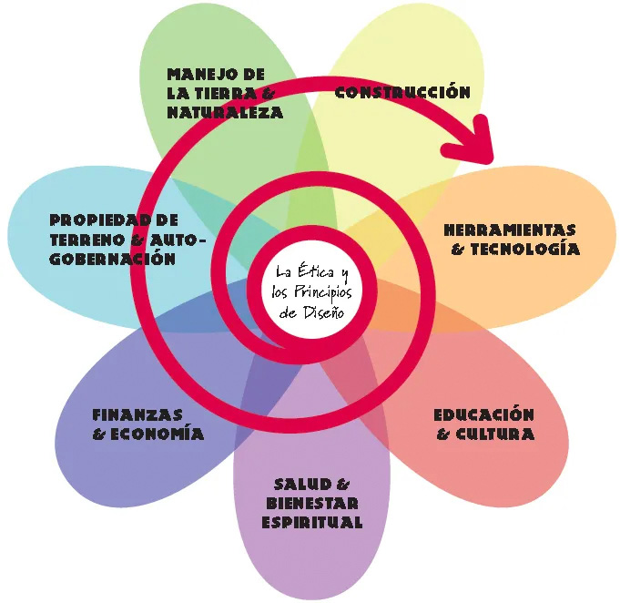
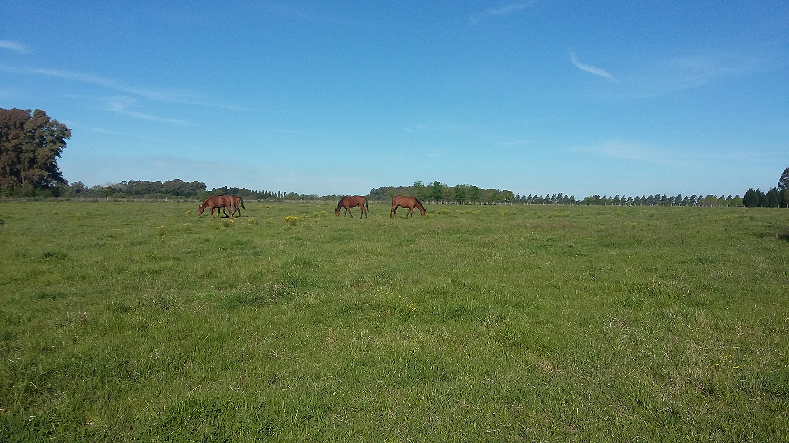

Nuestra historia
Este proyecto nace de la búsqueda de una vida con mayor contacto con la naturaleza, de la necesidad
de construir vínculos humanos basados en la confianza, y de promover un cohabitar y co-cuidado.
El confinamiento agudizó esta visión y el reconocimiento de que el modelo imperante es insostenible.
Comenzamos a reunirnos en mayo del 2020 y a gestar una comunidad que llenó de sentido este período
tan difícil.
Fuimos compartiendo durante meses encuentros virtuales donde expresamos con libertad y franqueza
nuestros sueños, expectativas y pensamientos, encontrando un lenguaje común. Incorporamos el
conocimiento de tecnología sociales y contacto con otras experiencias comunitarias para poder
diseñar la nuestra.
Este proyecto busca albergar espacios individuales privados con espacios comunes para el encuentro.
Al modelo de Cohousing que ya existe en otros países le sumamos el compromiso con el respeto
por los ecosistemas naturales y su regeneración. Ya hay experiencias en Latinoamérica y otras
regiones de Eco-aldeas que viven con estos valores. Tomamos inspiración de ambos modelos, buscando
nuestra propia identidad.
El grupo fundador se compone de personas mayores de 50 años abiertas a recibir a nuevxs
Confluencers de todas las edades.
¿Cómo nos organizamos?
Tomamos la Comunicación No Violenta, la Sociocracia y la Permacultura como pilares de nuestra organización y modelos de relación entre nosotres y con la Tierra de la que somos parte.
Permacultura: “Es el diseño consciente de paisajes que imitan los patrones y las relaciones de la
naturaleza, mientras suministran alimento, fibras y energía abundantes para satisfacer las necesidades
locales”.
Es una ética de cuidado de la Tierra, de cuidado de la gente, y de la justa distribución.
Un modo de trabajar con la naturaleza de la que somos parte, observando sus procesos y funciones.
La Permacultura utiliza el pensamiento sistémico y principos de diseño para organizar el territorio
y el establecimiento de comunidades en él.
No se trata sólo de paisajismo, las habilidades de la horticultura biológica, la agricultura
sostenible, la construcción de casas energéticamente eficientes o el desarrollo de eco-aldeas;
sino también de que comunidades, familias e individuos puedan utilizar estos recursos para diseñar,
establecer y gestionar un futuro sosenible.
La flor del sistema de diseño permacultural muestra aquellos temas clave que requieren una
transformación para crear una cultura sostenible.
https://holmgren.com.au/

Sociocracia: Es una forma de organización horizontal que busca la participación con transparencia,
equidad y eficacia para alcanzar los objetivos grupales, tomando las decisiones por consentimiento y
escuchando todas las voces.
La sociocracia es una metodología de gobernanza participativa en la que, a diferencia de los modelos
jerárquicos, quienes trabajan en conjunto deciden en conjunto. Se reparten las áreas de trabajo en
círculos con objetivos propios y autonomía en las decisiones sin descuidar los objetivos de toda la
organización.
La información es compartida por todes, los acuerdos se establecen de forma ágil y son revisados y
retroalimentados periódicamente.
Se aplica en empresas, asociaciones culturales, ONGs y comunidades intencionales
En nuestro caso nos repartimos en círculos (equipos) para avanzar en las distintas áreas que hacen a
la gestión del proyecto. Es una estructura móvil y dinámica.
Los círculos activos en este momento son: Búsqueda de campos, Organización Jurídica, Economía e
Infraestructura, Bienvenida a nuevxs integrantes, Relaciones +Humanas, Acuerdos de Convivencia, y un
Círculo General con representantes y coordinadores de cada círculo.
https://www.sociocracyforall.org/es/
Comunicación No Violenta: Desarrollada por M. Rosenberg, propone un modo de comunicación efectivo
y en coherencia con nuestros valores. Partiendo de reconocer todas las necesidades humanas como
válidas, nos invita a discernir entre nuestros pensamientos y sentimientos, y priorizar la conexión
por sobre el tener razón.
Las necesidades van desde aspectos como la libertad, autonomía, intimidad, diversión a otras como el
descanso, alimentación, seguridad, compañía. Que estas necesidades se vean satisfechas o no, se
manifiestará en sentimientos de alegría, estímulo, confianza, o miedo, tristeza, frustración.
Los cuatro elementos clave de la comunicación no violenta (CNV) son: observar sin evaluar, identificar
y expresar los sentimientos, asumir la responsabilidad de nuestros sentimientos y formular a los demás
pedidos conscientes para enriquecer nuestra vida. El conectar con nuestras necesidades y con las de los
demás nos aleja de prejuicios y evaluaciones, y nos hace capaces de poner en práctica el poder de la
empatía para comunicarnos de manera efectiva.
https://resuenacolombia.com/comunicacionnoviolenta
